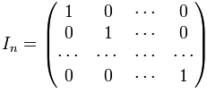

Module studiate
1) Matrice (pag. 2-5)
2) Derivata (pag. 10-12)
3) Derivata de ordinul II (pag. 15-20)
4) Unghiuri diedre (pag. 25-30)
Curiozitati
Ce este o matrice?
Matricea unitate, de exemplu, este tot o matrice pătratică, iar definiția acesteia o găsiți în secțiunea dedicată tipurilor de matrice. Un alt tip de matrice pătratică este matricea diagonală, care ne este de mare ajutor în probleme. Tot o matrice pătratică este și matricea triunghiulară, care poate fi de două tipuri: matrice triunghiulară inferior și matrice triunghiulară superior.
